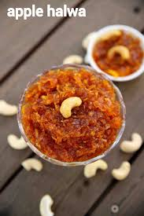

Recipe Page
Ingredients
Steps
Tips
Nutrition
Contact
Bottle Gourd Halwa (Lauki Halwa)
A simple Indian dessert made with grated bottle gourd, milk, sugar, and ghee.
Prep: 10 mins
Cook: 25–30 mins
Serves: 4
Level: Easy

Ingredients
2 cups grated bottle gourd
2 tbsp ghee
1 cup milk
1/3–1/2 cup sugar
1/4 tsp cardamom powder
10–12 cashews & almonds
1 tbsp raisins (optional)
Steps
Heat ghee and fry dry fruits.
Add grated lauki and sauté.
Pour milk and cook until soft.
Add sugar & cardamom, cook till thick.
Mix nuts and serve warm.
Tips & Variations
Add khoya or condensed milk for richness.
Use tender green lauki.
Adjust sugar to taste.
Nutrition (per serving)
Nutrient
Amount
Calories
230 kcal
Carbs
25 g
Protein
5 g
Fat
12 g